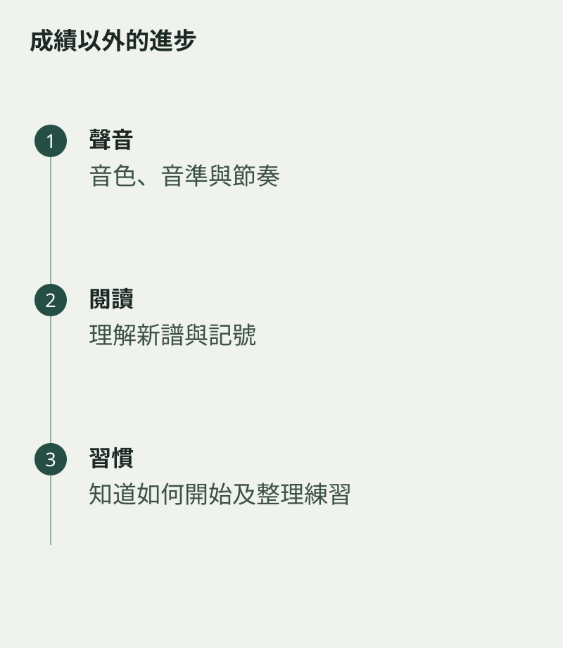

學了一段時間，還未報考，家長可能想知道進度在哪裏。考級是一種觀察途徑，但日常能力也有可看見的變化：能否讀一小段新譜、保持拍子、聽見錯音，或知道回家該怎樣練。
先與老師確認當前階段的重點，避免用未開始學的技巧衡量孩子。正在建立發聲與姿勢的學生，進步未必表現在曲目變長，而可能是聲音更自然、拿樂器更穩。
用相同任務作比較
保留一段短錄音，隔一段時間用同樣曲句再錄，聽音頭、節奏和句尾的差別。不要每次都拿新曲比較，否則難度改變了，便看不清能力變化。
也留意孩子是否較能獨立開始：懂得放好譜架、找到老師標示的位置、完成簡單練習。這些習慣未必有分數，卻影響之後學習是否能持續。

請老師把目標說具體
「有進步」可以再追問成「哪一項比上月穩定？下一步準備甚麼？」目的是讓家長知道觀察方向；承諾日期的事，不必在此刻追問。
孩子也可以參與回看，自己說一件較容易做到的事。進步不一定總向上直走，有時學新動作會暫時慢一些。用一段時間的證據來看，比每堂追問「學到第幾頁」更接近音樂學習真正發生的樣子。